SmartSeedsEquipo Condor Mission, NASA Space Apps 2026. Datos: NISAR, NASADEM, NASA POWER y Blue Marble; CHELSA y SoilGrids; INEC-ESPAC y MAG-SIPA; FAO EcoCrop.
Acerca el mapa hasta ver tu terreno.
Puedes saltarte estas preguntas. Si las respondes, el resultado se ajusta mejor a tu terreno.
Preparando la vista del planeta